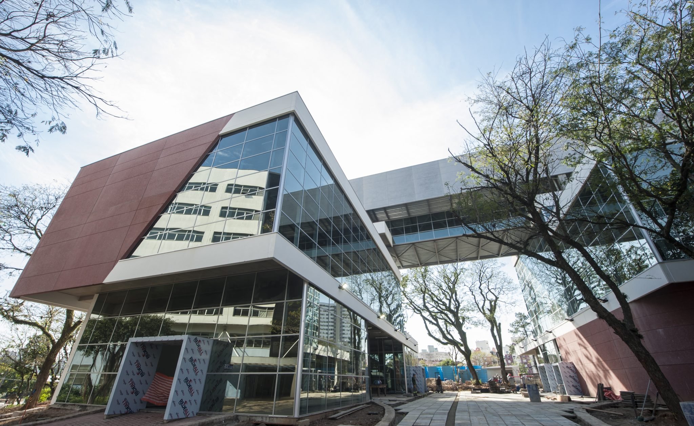
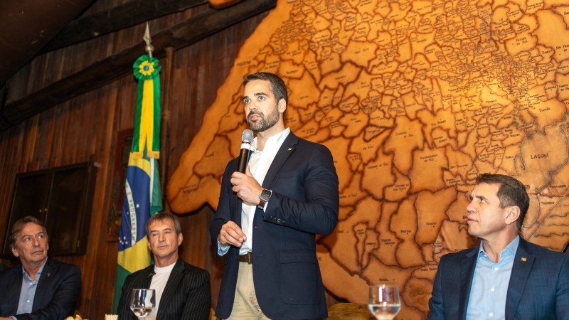

Jornal do Gaúcho

O Vale dos Vinhedos, localizado entre os municípios de Bento Gonçalves, Garibaldi e Monte Belo do Sul, vem consolidando-se como o principal polo vinícola do Brasil. A região, que já é reconhecida por sua tradição na produção de vinhos finos, agora vivencia uma nova fase marcada pela ascensão das vinícolas artesanais. Diferente das grandes indústrias, essas pequenas produtoras familiares apostam em técnicas manuais, colheita seletiva, fermentação espontânea e envelhecimento em barris de carvalho, criando vinhos únicos que expressam o "terroir" local — a combinação entre solo, clima e cultura. Nos últimos cinco anos, a procura por vinhos naturais e orgânicos cresceu tanto no mercado interno quanto externo, abrindo espaço para os produtores artesanais do Vale ganharem destaque. Muitos deles têm participado de feiras internacionais e conquistado prêmios, elevando o nome da vitivinicultura gaúcha. Além da produção, o enoturismo também se fortalece: milhares de visitantes percorrem as rotas do vinho, participam de experiências imersivas nas propriedades, degustações orientadas e até da tradicional colheita da uva. Essa movimentação aquece o comércio, a rede hoteleira e os serviços, gerando emprego e renda para a comunidade local. A combinação entre sustentabilidade, tradição e inovação tem sido o segredo do sucesso. O futuro da vitivinicultura gaúcha parece promissor, com um público cada vez mais interessado em vinhos de identidade e história.
 Porto Alegre inaugurou neste mês o mais novo Parque Tecnológico do estado, um projeto ambicioso que busca transformar a capital em um polo de referência em tecnologia e inovação no Brasil. Batizado de “InovaSul”, o espaço está localizado em uma área estratégica da cidade e oferece estrutura de ponta para startups, laboratórios de pesquisa, coworkings, centros de desenvolvimento e empresas ligadas à chamada economia do conhecimento. O parque foi concebido com base em modelos internacionais de ecossistemas de inovação, como os encontrados no Vale do Silício, e visa integrar empresas privadas, universidades, órgãos públicos e investidores em um mesmo ambiente colaborativo. Áreas prioritárias incluem tecnologias para o agronegócio (agritech), energia limpa, biotecnologia, inteligência artificial, internet das coisas (IoT) e soluções em saúde pública. O investimento total no projeto ultrapassa R$ 250 milhões, com recursos vindos de parcerias público-privadas, fundos de inovação e apoio de instituições como a UFRGS, PUCRS e FAPERGS. Além do aspecto econômico, o parque também se compromete com práticas sustentáveis, como o uso de energia solar, reaproveitamento de água da chuva e prédios com certificação verde. Estima-se que nos próximos cinco anos, o InovaSul gere mais de 8 mil empregos diretos e impulsione uma nova geração de empreendedores e cientistas. Porto Alegre, que já vinha se destacando por seu ecossistema de startups, agora se posiciona como referência em tecnologia aplicada à realidade brasileira.
 Gramado, um dos destinos turísticos mais visitados do Brasil, anunciou um novo ciclo de investimentos públicos para modernizar sua infraestrutura e ampliar sua capacidade de atendimento aos visitantes. A cidade, conhecida por seus eventos temáticos como o Natal Luz e o Festival de Cinema, recebe anualmente mais de 6 milhões de turistas. Para lidar com essa demanda crescente, a prefeitura está implementando um plano estratégico de desenvolvimento urbano sustentável. Com investimentos previstos de R$ 120 milhões, o projeto inclui obras de pavimentação ecológica, ampliação do aeroporto regional de Canela, criação de novos corredores turísticos, instalação de painéis interativos de informação ao visitante e um sistema inteligente de mobilidade urbana que visa diminuir o trânsito nos períodos de alta temporada. Outro ponto central é a revitalização do Lago Negro, um dos pontos mais emblemáticos da cidade, com trilhas acessíveis e iluminação cênica. O pacote também contempla ações de qualificação profissional voltadas aos trabalhadores do setor hoteleiro, gastronômico e cultural, com o objetivo de manter o padrão de excelência que tornou Gramado uma referência nacional em hospitalidade. Essas medidas visam não apenas manter a atratividade da cidade como destino turístico premium, mas também preservar sua identidade cultural, o meio ambiente e a qualidade de vida dos moradores. Com uma gestão voltada ao desenvolvimento inteligente e à experiência do visitante, Gramado reforça sua posição como joia da Serra Gaúcha.